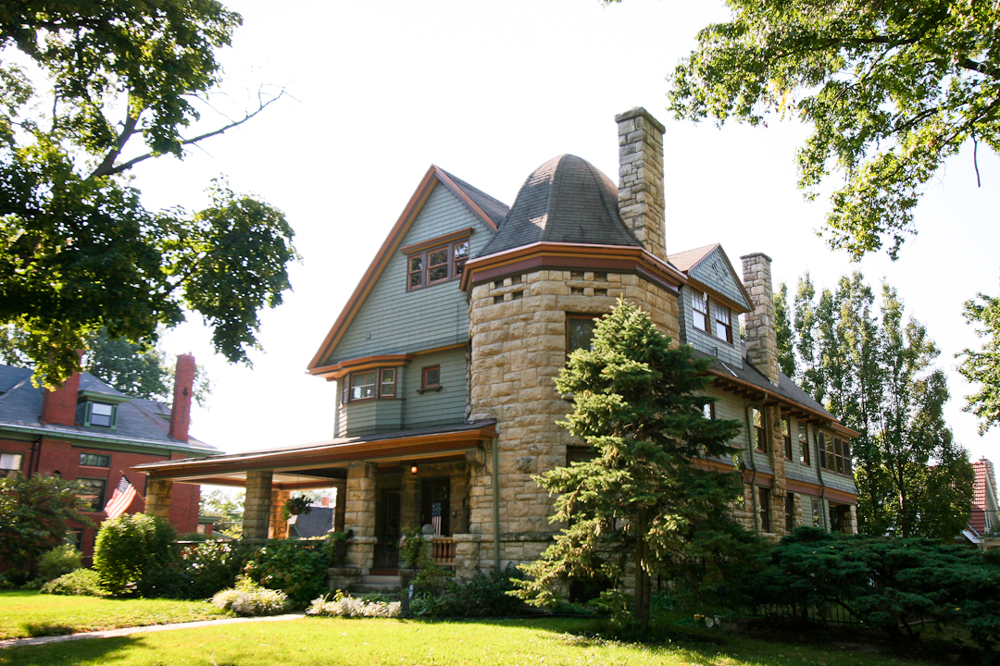
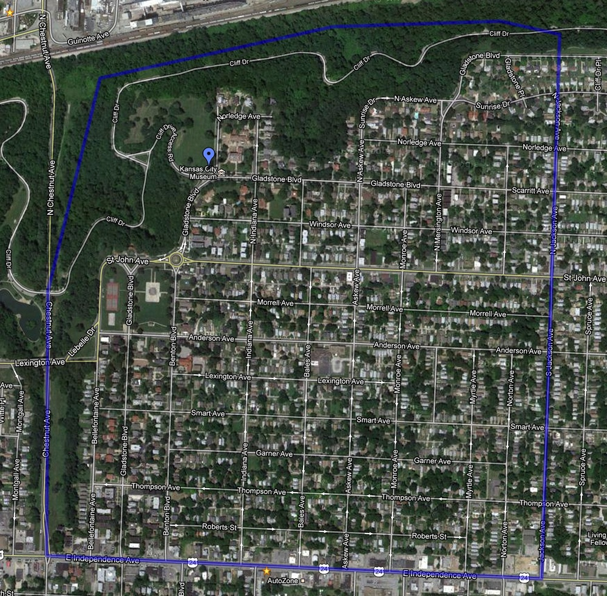
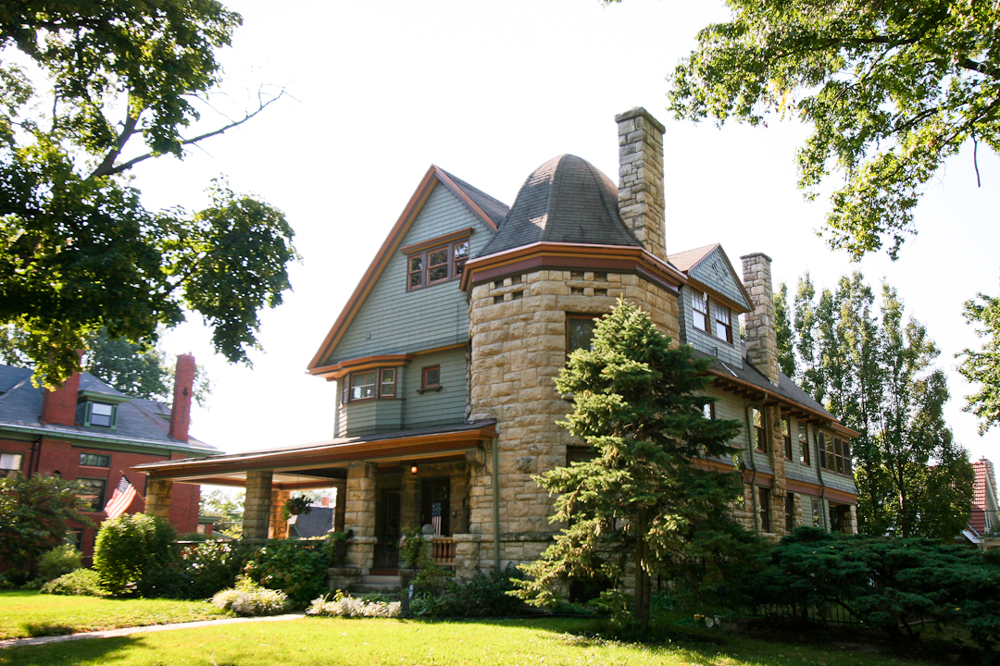

Photos
Courtesy of Lo and Behold Photography


Thank you for visiting ScarrittKC.org ! If you are a neighbor or resident, we hope that you’ll join us at our monthly meetings at 6:30 ON THE FIRST MONDAY OF THE MONTH (EXCEPT HOLIDAYS) at the KANSAS CITY Museum at 3218 Gladstone Blvd. If you are visiting the site, we hope we’ve answered your questions and that you’ll come visit our neighborhood.
Scarritt Renaissance is one of the oldest parts of Kansas City, and with hundreds of acres of wooded public park space, we’re “Kansas City’s backyard playground”. Whether you enjoy great city parks with walking trails through the woods, the Kansas City Museum, fabulous car free weekends on Cliff Drive, biking, skateboarding, rollerblading, running, disc golf, rock climbing, fishing, hiking, even metal detecting, Scarritt Renaissance has something for you. Scarritt Renaissance is Kansas City’s Backyard Playground!
Leaders and volunteers at Scarritt Renaissance Neighborhood Association are continually working to make our community better. Be part of the movement – contact President Leslie Caplan at president@scarrittkc.org or call 816-326-8669 and ask to get involved.
Also be sure to check out our Facebook page if you like us.
The SRNA neighborhood (zip codes 64123 and 64124) encompasses approximately 1.2 square miles with a population of about 6,100 people in the area between Cliff Drive and Independence Boulevard on the north and south and between Chestnut Trafficway and Jackson Avenue on the west and east. According to 2010 US Census statistics, The median age is 29.3 years. In 2009, single family homes comprised 62% of the housing stock and their estimated value was $93,108. The population is a richly diverse mix of cultures including Caucasian, Hispanic, Americans of African descent, Vietnamese, Sudanese, Somalis and others.

Courtesy of Lo and Behold Photography
